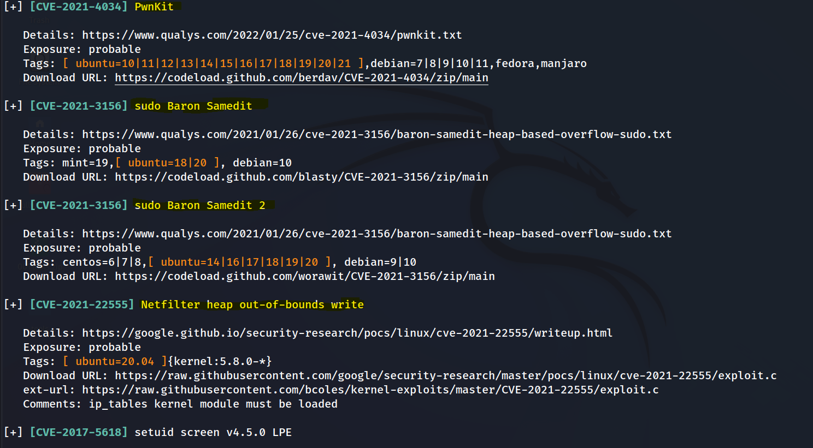
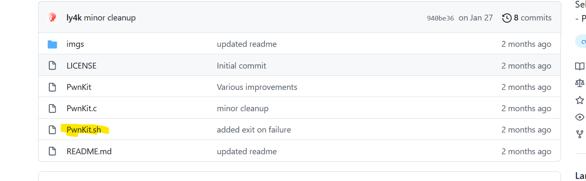
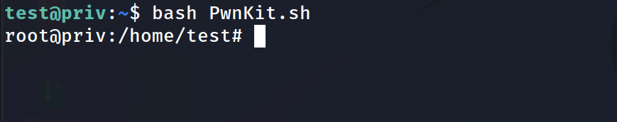

Introduction
In this article, we will explain privilege escalation through Kernel Exploits.
Before we begin, let us understand what the kernel (or system core) is. The kernel is one of the components of the operating system and it has complete control over everything that happens in the system. Because of this level of control, exploiting kernel vulnerabilities allows us to escalate our privileges on the system.
Kernel exploitation depends on the kernel version. By identifying the version, we can search for known vulnerabilities and their corresponding exploits.
The Scenario
Our approach will be as follows: we will use the Linux Exploit Suggester tool. This tool scans the system for specific program and kernel versions, and based on those versions, it searches for matching exploits from sources like ExploitDB or GitHub.
The Attack
Initial Access
As usual, we are logged in as the user test and we want to reach root privileges.
Running Linux Exploit Suggester
We download the Linux Exploit Suggester tool to the target machine and run it.
Let us review the results it produces. We can see that it has identified multiple kernel vulnerabilities that affect this system.

Selecting and Using PwnKit
We will use the PwnKit vulnerability. We search for it on Google to find an exploit code.
After searching, we find a repository on GitHub that contains the exploit for this vulnerability.
We download the shell script file and execute it with the following command:
bash PwnKit.sh


Result
With that, we have successfully escalated our privileges to root through a Kernel Exploit. The Linux Exploit Suggester tool made it easy to identify which kernel vulnerabilities the system was affected by, and the PwnKit exploit provided a straightforward path to root access.
